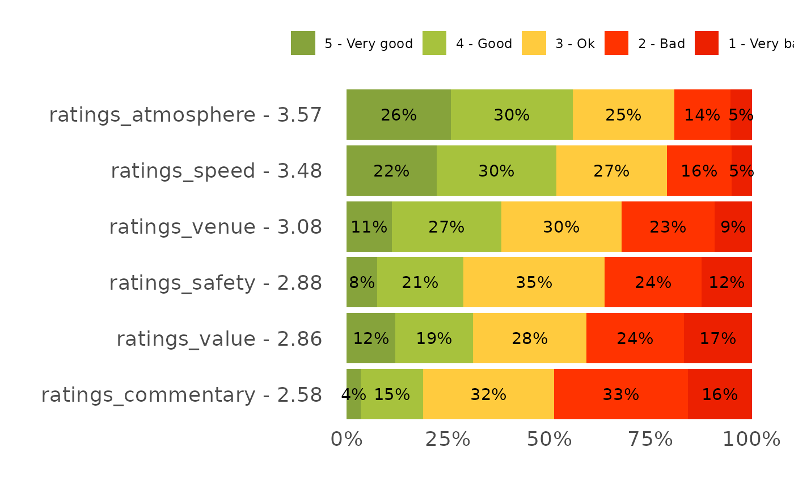

Draws a 100%-stacked bar per feature across an ordinal rating scale, labels each segment, and orders features by their weighted mean rating – the likeability, purchase and feature-rating charts a survey deck is built from.
Usage
plot_stacked_rating(
data,
feature,
level,
value = pct,
palette = NULL,
label_min = 1,
show_average = TRUE
)Arguments
- data
Long data with one row per feature x rating level.
- feature
Feature column (unquoted).
- level
Ordered rating-level column (unquoted), e.g. a factor like
"1 - Very bad".."5 - Very good". The leading digit is used as the numeric weight.- value
Percentage column (unquoted). Defaults to
pct.- palette
Fill colours, named by the level labels. Defaults to
NULL, which derives a red -> amber -> green rating palette from the level labels themselves (mapping each by its leading digit), so a very-bad..very-good scale is coloured worse-to-better automatically. Pass a named vector to override.- label_min
Hide segment labels below this percentage. Defaults to
1.- show_average
Append the weighted mean to each feature label. Defaults to
TRUE.
Details
Each feature becomes a 100%-stacked bar across the rating scale, and features
are ordered by their weighted-mean rating (the leading digit of each level
is the weight), so the best-rated feature sits at the top. The weighted mean
is appended to each feature label when show_average = TRUE. Feed it a long
table with one row per feature x rating level; the partner_* likeability and
purchase questions in the source reports are the canonical use.
Examples
rating_long <- podracing_survey %>%
select(starts_with("ratings_")) %>%
tidyr::pivot_longer(everything(),
names_to = "feature", values_to = "level") %>%
filter(level != "") %>%
mutate(level = paste0(recode_likert(level), " - ", level)) %>%
count(feature, level) %>%
group_by(feature) %>%
mutate(pct = n / sum(n) * 100) %>%
ungroup()
plot_stacked_rating(rating_long, feature, level)
